채널: 이웃집사장 | 길이: 26:13 | 날짜: 2026-08-07
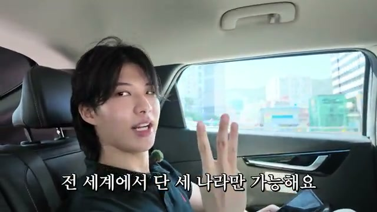
영상은 인터뷰어(PD)가 "지금 여태까지 부업으로 총수익은 얼마냐"고 묻는 것으로 시작한다. 주인공은 "17억 정도 되거든요"라고 답하며 인터뷰어가 "17억이요?"라고 놀라는 반응을 이끌어낸다. 그는 "네, 맞습니다. 여기서 작년은 6억 벌었고 제작년은 1억 6천, 23년은 4억 4천"이라고 연도별 수익을 구체적으로 밝힌다.
이어서 자신이 15살 때부터 처음으로 일을 시작했다고 말하고, 24살에는 3억이 넘는 빚이 있었다고 고백한다. 하지만 "24살에 1년 만에 3억 이상 빚을 다 갚았고" 그러다가 "정말로 개꿀인 부업을 알게 돼 가지고 그거를 지금 시작하고 있다"고 설명한다.
핵심 포인트는 "제일 중요한 게 전 세계에서 단 세 나라만 가능해요. 미국, 일본, 대한민국. 다른 나라는 절대 안 돼요"라는 부분이다. 인터뷰어가 "이거 얼마 걸릴 거 같으세요?"라고 묻자 "처음 만들면 그래도 몇 시간 걸리지 않을까요?"라고 예상하지만, 주인공은 "저는 단 40초에서 1분 이렇게 걸려요"라고 답하며 인터뷰어를 놀라게 한다.
주인공은 "리님 너무 궁금한 게 많으신 거 같은데 제가 사무실 가서 다 알려 드릴게요. 정말로 개꿀이에요"라고 예고한다. 이후 사무실에 도착해 "저는 현재 사진 한 장으로 달러를 벌고 있는 플로우라고 합니다"라고 자기소개를 한다.
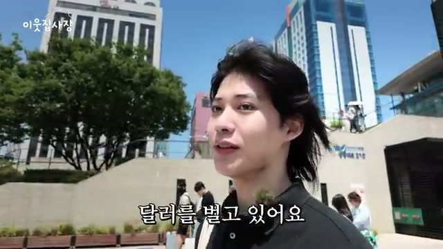
인터뷰어는 "오늘 지금 일요일인데 부업 알려 주신다고 해가지고 제가 서울에서부터 지금 부산까지 왔거든요"라고 말하며 고생했음을 전한다. 주인공은 "고생 많으셨습니다"라고 응대하고, 인터뷰어는 "어떤 부업이길래 도대체 여기까지 지금 부르신 건지"라고 궁금해한다.
주인공은 "여태까지 정말로 많은 부업을 해봤거든요. 근데 이번만큼은 정말로 개꿀이다 싶어가지고 피디님께 알려 드리려고 이렇게 불렀습니다"라고 설명한다. 이어서 "정말 개꿀인 부업들만 이렇게 골라서 일을 하다 보니까 좀 돈을 쉽게 쉽게 벌었던 경향이 있던 거 같아요"라고 자신의 수익 비결을 요약한다.
현재는 "인스타그램으로 달러를 벌고 있다"며, "사진 한 장만 올려 가지고 한 달에 100만 원 정도 벌고 있습니다"라고 말한다. 인터뷰어가 26살이라는 나이에 놀라워하며 "26살인데 두 업으로만 17억을 버신 거예요"라고 묻자, 주인공은 "나중에 이거 다 인증해 드릴게요. 여태까지 소득이라든지"라고 약속한다.
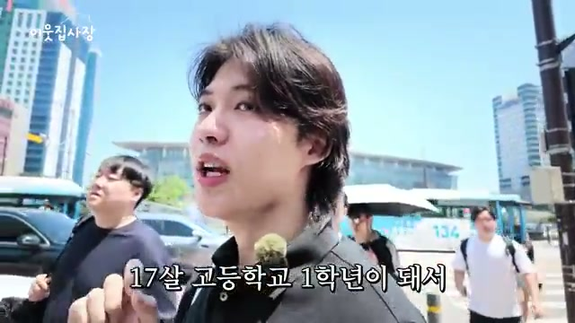
주인공은 15살이었던 2015년을 회상한다. "2015년 때 한창 페이스북이 유행을 했잖아요. 그때 페이스북 들어가 보면은 팔로우하면 돈 준다. 팔로우하면 치킨 준다. 댓글 달아라 돈 준다. 이런 게 많이 유행을 했었어요." 처음에는 "사람들이 이걸 왜 하지?"라고 생각했다가, 자신이 단 댓글이 나중에 광고로 바뀌는 것을 발견하고 "나도 해 볼까" 하고 시작했다.
결과적으로 15살 첫 달에 월 30만 원을 벌었다. 이후 성장 속도는 가파르다:
인터뷰어가 "큰 돈이죠"라고 하자 주인공은 "큰 돈이죠"라고 수긍한다. 이후 대학에 가지 않고 일에 집중하기로 결정, 20살에 사업자 등록증을 내고 시작했는데 3~4개월 만에 바로 1억을 모았다. "그때는 무슨 부업을 하신 거예요?"라는 질문에 "그때도 페이스북이었어요"라고 답한다.
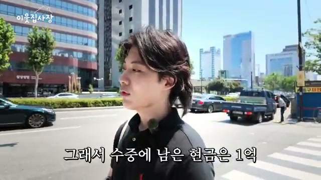
23살 말에서 24살 초반, 페이스북 페이지를 마케팅 회사에 전략 매각하여 7~8억 정도를 모았다. 그 시점에 "페이스북이 머리고 유튜브가 한창 올라가는 시기"였기 때문에, 모아 놓은 현금 5억과 개인 사업자 대출 3억을 합쳐 총 8~9억 원을 유튜브 채널에 몰빵했다.
그러나 "한창 그때 유튜브도 숙청이 있었어요. 숙청이 뭐예요? 그냥 채널이 삭제돼요. 다 정지를 시키거든요." 매입한 지 3개월 만에 100만 채널이 모두 날아갔다. 그 결과 "수중에 남은 현금은 1억 그리고 빚은 3억이 넘게 있었어요. 24살에."
주인공은 이를 자신의 성향 탓으로 돌린다. "제가 좀 리스크 있게 투자라든지 사업이라든지 하는 경향이 있다 보니까 확 올라갔다가 확 내려갔어요. 그때."
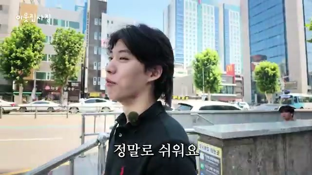
25살, 블로그가 유행하기 직전에 먼저 알아채고 시작했다. "한 개 해 보니까 되네. 두 개 해 볼까? 두 개도 되네. 세 개 해 볼까? 이거 프리랜서 고용해서 다 해보자." 이런 방식으로 블로그를 총 20개 넘게 운영했다.
성과는 놀라웠다. "블로그로 잘 벌었을 때는 한 달에 1억 가까이 벌었고 보통은 한 5천만 원 정도 이렇게 나왔던 거 같아요. 한 달에 순수익으로." 그 결과 1년 만에 3억 이상의 빚을 모두 갚았다.
인터뷰어가 여러 부업 중 오늘 알려줄 부업의 난이도를 묻자, 주인공은 0에서 10까지 기준으로 "페이스북은 거의 9, 10. 유튜브도 거의 7, 8이 정도이고 이건 거의 한 1, 2이 정도예요. 정말로 쉬워요"라고 비교했다.
사무실로 이동하는 차 안에서 주인공은 면허가 없다고 밝힌다. "저가 면허가 없습니다. 차 욕심도 별로 없어요. 굳이 집이랑 사무실에서 일만 하는데 나갈 이유도 없고 굳이 안 따고 있어요."
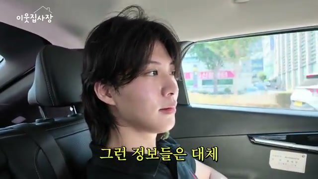
17억 수익의 근거로 주인공은 '잡브레인'이라는 앱을 소개한다. "잡브레인이라고 어플이 있는데 거기서 연봉 확인이 가능하더라고요. 여태까지 소득이랑 저가 지금 한번 켜서 보여 드릴게요."
그는 "국세청 연동해 가지고 여태까지 소득이 얼마인지 확인해 봤는데 17억 나왔더라고요"라고 설명하며 "이거 조작된 거 아니고요"라고 덧붙인다. 앱에는 작년(2025년) 6억, 재작년(2024년) 1억 6천, 2023년 4억 4천이 표시된다. "이게 작년까지만 떠요. 올해는 안 뜨는 걸로 저는 알아요"라고 현재 시점의 한계도 설명한다.
부업 정보를 어떻게 알게 됐는지 묻는 질문에 주인공은 "솔직히 저는 알려주는 사람이 별로 없었어요. 그래서 그냥 맨 땅에 헤딩을 했습니다"라고 답한다. 자신의 좌우명을 공개한다. "정답을 알고 싶으면은 시장을 봐라. 시장의 정답이 다 있다. 일단 뺏기고 시작해서 그다음 내 방식을 넣어."
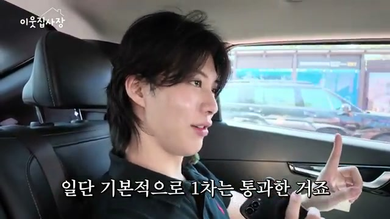
주인공은 해외 정보를 얻기 위해 "국내에는 DC 인사이드라는 사이트가 있잖아요. 해외는 레딧이라 사이트가 있거든요. 레딧에서 하루 종일 뒤져요"라고 말한다. 검색 키워드는 "인스타그램 수익, 페이스북 수익, 블로그 수익, 에드센스, 유튜브" 등이다.
그렇게 찾은 것이 "이번에 새로 나온 인스타그램 보너스"다. "원래 이게 미국에만 있었어요. 근데 이제 일본이랑 대한민국이 이렇게 들어왔거든요." 한국에는 2026년 올해 초에 들어왔다.
가장 중요한 조건을 다시 강조한다. "전 세계에서 단 세 나라만 가능해요. 미국, 일본, 대한민국. 다른 나라는 절대 안 돼요." 이에 대해 주인공은 "저희는 어차피 대한민국에 살고 있으니까 일단 기본적으로 1차는 통과한 거죠"라고 의미를 부여한다.
유튜브처럼 구독자 1천 명 요건이 있냐는 질문에, 주인공은 조건을 설명한다. "일단 대한민국 살고 19세 이상 성인이어야 되고 3개월 동안 100만 조회를 채워야지 수익을 낼 수가 있는데 100만 조회하면 솔직히 벽이 느껴지잖아요. 버리김이 생기고. 근데 저는 이미지 한 개 잘 만들면은 한 개에서 100만 조회수가 나와요."
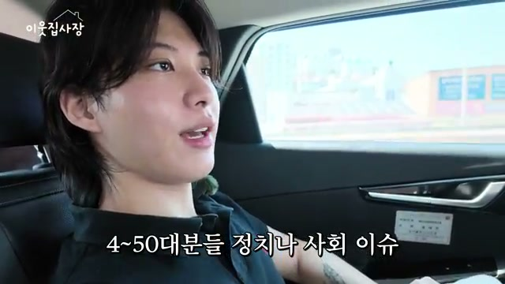
주인공의 계정은 "월간 저희가 1100만" 조회수를 기록 중이다. "뚫는 준비 중이라서 게시물을 많이 안 올리고 있는데도 한 개당 80만, 150만, 130만, 190만, 200만" 조회수가 나온다. 인터뷰어는 "한 개만 잘 만들어도 바로 통과가 돼요"라는 설명에 놀라워한다.
인터뷰어는 "저는 사진 잘 올려야 된다고 해가지고 사진을 직접 잘 찍어야 되나 이런 생각을 했는데 그런 게 아니네요"라고 말한다. 주인공은 "그냥 미리 만들어온 툴에 이미지만 넣고 제목만 바꾸면 그게 끝이에요"라고 답한다.
어떤 사진을 올리느냐는 질문에 "이거는 연애 이슈라든지 사회 이슈, 정치 이슈 이렇게 세 가지 섞어서 올리고 있어요. 40대, 50대 분들 정치나 사회 이슈 이런 거 엄청 관심이 많으시잖아요"라고 설명한다. 특히 "요즘 이재명 대통령님 때문에 엄청 난리가 났잖아요. 올리기만 했는데 150만 조회수가 나왔어요. 3.7만 명이나 좋아요를 눌러 주셨고"라고 구체적인 사례를 든다. "30일 이내 5만 명 이상 동일 시청자" 같은 조건도 언급한다.
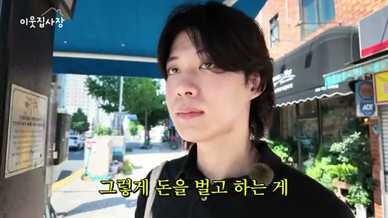
일요일인데도 일하는 주인공에게 인터뷰어가 "보통 안 쉬시나요?"라고 묻자, "쉬는 개념이 딱히 없는 거 같아요. 주말이든 금요일이든 맨날 일합니다"라고 답한다. 이유를 묻자 "평범하게 사는데 행복한 미래를 상상한다. 그거는 좀 잘못된 생각이라 생각해요"라고 철학을 밝힌다.
이런 생각을 15살 때부터 가졌냐는 질문에, 중학생 시절을 회상한다. "학교 마치면 한 3시잖아요. 중학생 때까지 새벽 1시까지 주구장창 계속 일을 하고 자고." 부모님의 반응은 "컴퓨터 갖다 버린다 했습니다"였다.
돈을 벌게 된 계기에 대해 "천부적으로 돈이 좋았어요. 그렇다 보니까 계속 돈을 갈망하고 돈을 벌게 됐던 거 같아요"라고 말한다. 남들과 다른 희열의 기준을 공유한다. "보통 학창 시절에 시험 점수 잘 나오면은 기분 좋잖아요. 저한테는 새로고침 한번 하고 수익이 높게 나왔을 때 그때가 기분이 제일 좋았어요." 공부 성적은 "반에서 30명이었거든요. 29등, 28등. 그렇게 했습니다"라고 솔직하게 말한다.
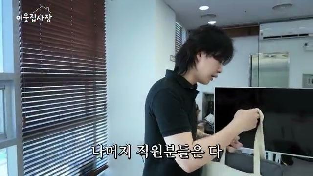
사무실은 주말이라 비어 있다. 주인공은 사무실 사용 빈도에 대해 "여기서는 한 달에 한네 번 열 번 사이로 오는 거 같고 나머지는 다 집에서 하거나 아니면 여행 가서 일하거나 그럽니다"라고 말한다. "폰 한 개만 있으면 되니까요. 노트북이나"라는 설명이 이동식 노마드 생활을 뒷받침한다.
사무실은 "엔터테인먼트랑 마케팅 쪽 일하고 있는 회사"로, 대표님과 공유해서 쓰고 있다. "한네 분 정도는 제 직원이고 나머지 직원분들은 다 엔터테인먼트 쪽 직원이고요." 직원들에게는 "멘트 같은 거 이렇게 써야 한다. 요즘 트렌드는 이거다. 이렇게 운영을 해라"라는 교육을 한다고 밝힌다.
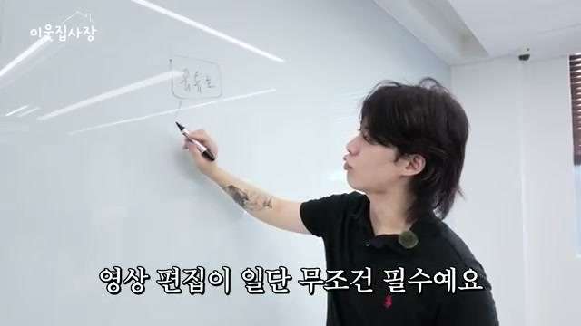
인터뷰어가 수익 인증을 요청하자, 주인공은 "이런 식으로 정산 보시면은 한 달에 두 번 정산을 해 주거든요"라며 6월 22일에 입금된 내역을 보여준다. 인터뷰어는 택시에서 봤던 이미지로 이런 수익이 발생한다는 것을 확인한다.
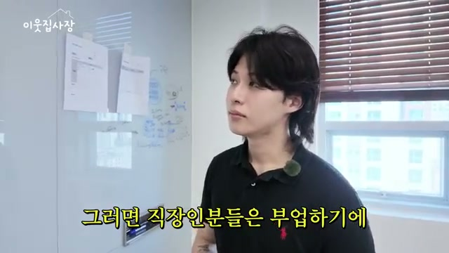
주인공은 인스타그램 보너스의 장점을 설명하기 위해 기존 부업들을 비교한다. 유튜브 부업에 대해 "영상 편집이 일단 무조건 필수예요"라며 "아무리 AI가 다 만들어 준다고 하더라도 단축키 다 외워야 되고 너무 어려워요"라고 말한다. 트렌드 문제도 지적한다. "유튜브는 짧게는 한두 달마다 아니면 길게는 네 다섯 달마다 이렇게 트렌드가 바뀌어요. 그래서 40대, 50대, 60대 분들은 쉽게 도전을 못 해요."
블로그도 마찬가지로 "인기는 있지만 40대, 50대 이런 분들은 하기가 조금 어려워요. 아무리 GPT가 자동으로 다 써 준다 하더라도 약간 트렌드를 따라가야 하기 때문에 인스타보다는 어려워요"라고 평가한다.
자신의 경험을 근거로 제시한다. "작년에 블로그로 7억 가까이 벌었고 유튜브도 작년에도 100만 이상 굴려봤고" 반면 인스타그램 보너스는 "2026년에 나왔어요. 아는 사람이 없어요. 하는 사람도 없어요."
핵심 차별점은 "인스타는 이미지 한 장으로 스위카(스위칭+?)가 가능해요. 영상 편집 필요 없어요. 그리고 이미지 직접 안 찍어도 됩니다. 그냥 이미지 툴만 이렇게 세팅해 놓고 계속 갈아끼우면 돼요"라는 것이다.
9 to 5 직장인들의 상황도 고려한다. "솔직히 요즘 9 to 5 정말 많잖아요. 초기 자본 들어가고 공유 오피스 같은 거 하려면 5천만 원 6천만 원 들어가잖아요. 초기 리스크 없어요." 부업의 정의에 대해서도 자신의 철학을 말한다. "하루에 3~4시간 이상 써야 된다. 그건 부업이 아니에요. 부업은 말 그대로 본업 이해에 한 시간 이내 할 수 있는 업종을 부업이라 하는 거예요. 이건 한 시간만 해도 가능해요."
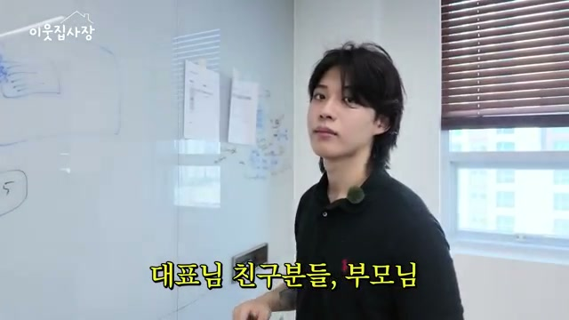
인터뷰어가 "처음 만들면 그래도 몇 시간 걸리지 않을까요?"라고 묻자 주인공은 "저는 단 40초에서 1분 이렇게 걸려요"라고 답한다. "보통 처음에는 그래도 5시간 6시간 걸려야 된다라는 부업들도 있잖아요. 근데 이제 그런 것들과 달리 이거는 처음부터 시간이 얼마 안 걸리는 건가요?"라는 질문에, "컴퓨터 할 줄 몰라. 마우스 클릭하는 것도 힘들어. 그런 60대 분도 저가 알려 드리면은 3분에서 5분 만에 가능해요"라고 자신한다.
친구나 가족에게 알려준 적이 있냐는 질문에 "제 학창 시절 친구들이랑 사촌 가족 이렇게 다 한번 알려 줘 봤어요. 안 해요"라며 웃는다. 이유에 대해 "귀찮대요"라고 전하며, 담배에 비유한다. "다들 흡연 한번 해 보신 분들 있을 거예요. 담배도 펴본 사람만 알아요. 근데 제 사촌이랑 친구들은 담배를 안 펴봤어요. 그래서 맛을 모르죠. 이것도 안 해 봐서 모르는 거예요. 돈이 얼마나 쉽게 벌리고 많이 벌린다는 걸."
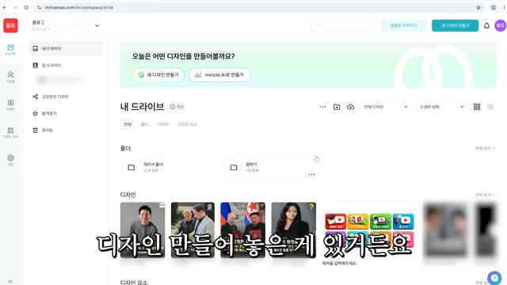
주인공은 실시간 시연을 시작한다. 첫 단계는 네이버에서 '미리캔버스'를 검색하는 것이다. "이미지를 손쉽게 만들 수 있는 사이트거든요. 어도비 그리고 피그마 이런 사이트도 많지만 미리캔버스가 무료이기도 하고 사용하기도 가장 쉬워요. 회원가입하고 결제를 안 해도 바로 사용할 수가 있어요."
자신이 만들어 놓은 디자인 템플릿을 보여주며 "저가 이전에 황정민 배우님이 사생팬이랑 이슈가 있어 가지고 해당 사진을 만들었거든요"라고 예시를 든다. 이어서 템플릿을 다른 주제로 바꾸는 과정을 보여준다.
네이버 홈 화면에서 뉴스로 들어가 "헤드라인 뉴스 이렇게 순위별로 나와 있는 거 있잖아요. 여기서 그냥 마음에 드는 거 아무거나 뽑으면 돼요. 정치라든지 경제, 사회"라고 설명한다. 연예인을 하고 싶으면 "엔터로 하셔서 1등, 2등, 3등, 4등, 5등 이렇게 다 있어요"라고 덧붙인다.
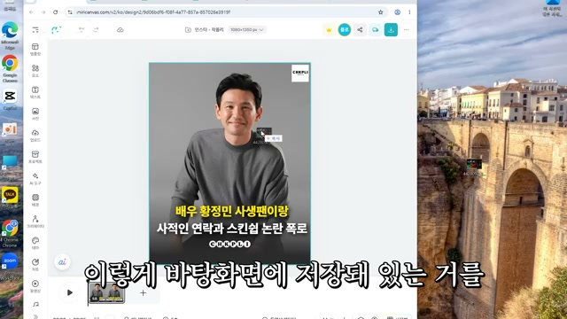
인터뷰어가 "무조건 1위 하는 게 좋은 거 아니에요?"라고 묻자 "네, 맞아요. 여기서 그냥 순위가 다 나와 있으니까 따로 뭐 셀렉할 필요가 없어요"라고 답한다. 주인공은 경제 카테고리를 선택한다. "요즘 부동산 코스피에 조금 핫하니까요. 이걸로 해 볼게요."
다음 단계는 구글에서 "코스피 이미지를 검색해 가지고" 관련 사진을 찾아 "바탕 화면에 저장"하는 것이다. 인터뷰어가 "기사 이름이 코스피니까 코스피 이미지를 검색하신 거죠?"라고 확인하고, 주인공은 저장된 이미지를 미리캔버스 템플릿에 "끌어오기만 하면은 이미지가 입혀져요. 이런 식으로 사이즈 맞게 넣고"라고 시연한다.
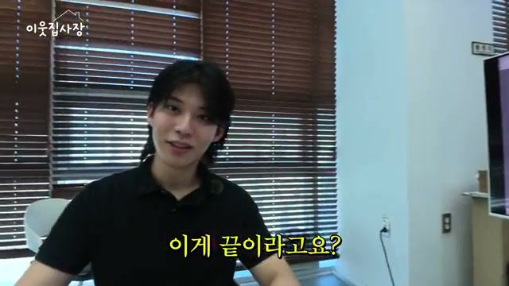
인터뷰어가 "남의 사진인데 저작권이나 이런 데는 안 걸리는 거예요?"라고 걱정하자, 주인공은 "여기서 저희가 2차 창작을 할 거기 때문에 저작권은 아예 안 걸려요"라고 답한다. 2차 창작의 의미에 대해 "이미지에도 1차 창작이 있고 2차 창작, 3차 창작이 있는데 저희가 한번 가치를 입힌 거잖아요. 그럼 저작권에서 안 걸려요"라고 설명한다.
인터뷰어가 "확대를 하거나 그런 기능을 통해서 저작권에 안 걸리게 할 수 있다"고 이해하자 "네, 맞습니다"라고 확인한다. "그리고 저가 해당 이미지를 그냥 가져오는 게 아니라 여기에 글자를 입힐 거잖아요. 그러면 2차 창작이 되는 거죠"라고 덧붙인다.
11년간 저작권에 걸린 적이 있냐는 질문에 "저가 15살 때부터 했잖아요. 지금 26살이잖아요. 11년 동안 한 번도 안 걸렸어요"라고 단언한다.
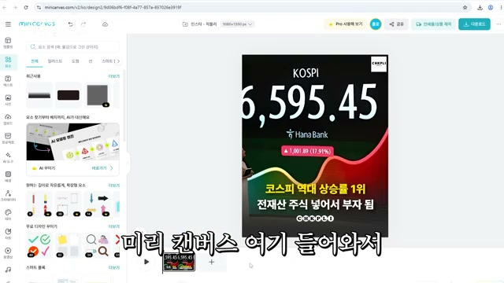
이미지에 텍스트를 입힌다. "코스피 역대 상승률 1위"라는 제목을 넣고 "미리를 변재산 주식 넣어서 1위. 두 자. 끝이에요"라고 말한다. 인터뷰어가 "이게 끝이라고요?"라고 놀라자 "네, 진짜 이게 끝이에요"라고 확신한다. 다운로드까지 완료한다.
하지만 이미지만 올리면 안 되고 "인스타그램에 이제 멘트 같은 것도 따로 작성을 해서 올려야 되잖아요"라고 설명한다. 인터뷰어가 "GPT를 여기서 들어가요. 여기서 아까 본 뉴스 있죠? 이거 링크를 복사해요. GPT한테 제목이랑 링크 두 개만 보내요"라고 이어받자, 주인공도 "GPT로 이렇게 딱 링크만 보내면 끝입니다"라고 확인한다.
인터뷰어가 "저는 저렇게 링크를 넣어도 저렇게 안 나올 거 같은데"라고 의문을 표하자, 주인공은 "아, 이건 저가 따로 만든 GPT라서 가능한 거예요. 일반 GPT는 저렇게 하면 안 돼요"라고 설명한다. 즉, 맞춤형 GPT 봇을 만들어 둔 것이다. "그냥 그대로 복사해서 인스타에 올리면 끝입니다."
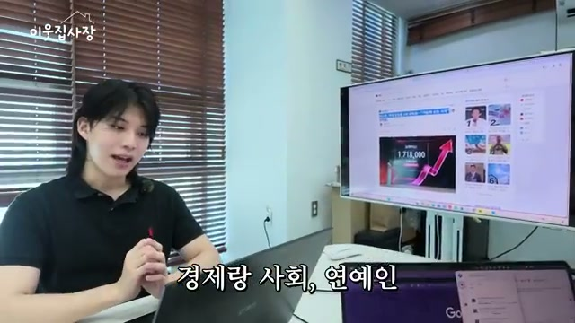
인터뷰어가 "틀을 만들어 놓거나 본문에 들어갈 내용을 만들어 놓는 그런 봇 같은 건 없잖아요. 그럼 없으신 분들은 어떻게 하면 좋을까요?"라고 묻자, 주인공은 "피디님이 안 그래도 부산까지 이렇게 내려오셨으니까 피디님이랑 시청자분들이 받아가실 수 있게 해당 영상에 댓글 남겨 주시면은 이 툴이랑 GPT 받아가실 수 있게 링크를 제가 남겨 드릴게요"라고 약속한다. 인터뷰어가 "그러면은 때로 복사해서 쓰면 되는 거예요?"라고 확인하고, "네, 맞아요"라고 답한다.
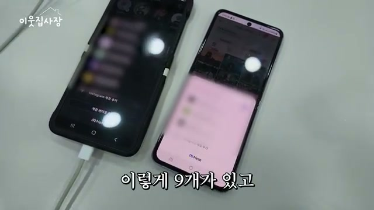
주인공은 경제·사회·연예인을 선택한 이유를 설명한다. "다른 거 올려도 되죠, 여기서? 근데 저가 왜 경제랑 사회랑 연예인 이거를 골랐냐면 동물을 올려도 돼요. 음식을 올려도 되고 여행을 올려도 돼요. 근데 여행 싫어하는 사람이 있을 수 있잖아요. 동물 싫어하는 사람이 있을 수도 있고. 근데 경제랑 사회랑 연예인은 대한민국 국민 누구나 관심 있어 할 만한 주제예요."
뉴스는 매일 업데이트되기 때문에 "소재가 고갈될 일이 절대 없어요"라고 강조한다. "저희 최초 언론사가 한 100년 전에 만들어졌다고 얼핏 들었긴 한데 100년 동안 소재 고갈이 한 번도 된 적이 없잖아요. 앞으로 100년 후도 소재 고갈이 될 일이 없어요. 이런 거는."
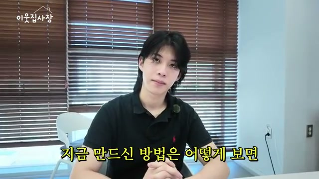
하루에는 계정당 "다섯 장에서 열 장 사이" 만든다. 계정은 총 "열 개에서 15개 운영하고 있어요." 월 순수익으로 "월 5만 달러가 가능하겠는데 5만 달러면 얼마죠?"라는 인터뷰어의 질문에 "7,500만 원"이라고 답한다. 화면에는 계정 9개가 보이고 "다른 곳에는 나머지는 한 다섯 개 여섯 개가 더 있어요"라고 덧붙인다.
핸드폰은 "집에 총 열 개" 있고, "혹시 문제가 생길까 봐 불안해서 이렇게 좀 나눠 놨어요"라고 리스크 분산 이유를 설명한다. 하지만 "매번 핸드폰 열 개를 바글바글 들고 다닐 순 없으니까 이렇게 메인 핸드폰 두 개만 들고 다니고 있어요"라고 실용적인 운용법을 공유한다.
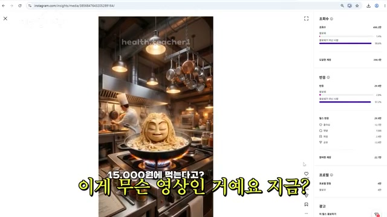
일반인도 "이대로만 하면 1천만 원이 벌 수 있는 건지" 궁금해하는 인터뷰어에게 주인공은 "일반인들 기준에서 이렇게 시도하시기만 하더라도 한 달에 10만 원, 50만 원 정도는 벌리실 거예요"라고 현실적인 기대치를 제시한다. "근데 제가 무료 강의 때 지금 안 밝힌 비법들을 다 알려 드릴 거거든요"라며 추가 자료를 예고하고, "혹시나 계정이 삭제가 될 수 있어요. 정책 위반으로. 그래서 해당 영상 고정 댓글에 제가 링크를 남겨 놓을 테니까"라고 안내한다.
쇼츠(숏폼) 영상을 따로 하지 않냐는 질문에, 주인공은 "안 그래도 저가 인스타그램에서 인플루언서 활동을 하고 있어요"라고 답한다. 해당 계정은 팔로워가 10만 명이 넘고, 인터뷰어가 "최소 1년 걸리지 않았을까요?"라고 예상한 것과 달리 "이거 단 3개월도 안 걸렸어요"라고 말한다.
건강 정보 관련 계정인데 "전 얼굴 노출해서 인플루언서 하기 조금 꺼려지더라고요. 지인들이 알아볼까 봐 그래 가지고 AI 캐릭터를 만들어 가지고 그거를 내세워서 활동을 하고 있어요." 조회수는 "잘 나오면은 250만"이고, "이거는 약간 좀 민감한 광고긴 한데 이것도 조회수 100만 찍었어요. 광고입니다"라고 말한다. 또한 "영상 한 개만 잘 만들면 팔로우가 4만 명이나 올라요"라고 한다.
해당 영상은 "배달로 절대 먹으면 안 되는 음식"이라는 주제였다. "1번 파스타 가성비 음식이잖아요. 2번 만두 이것도 가성비잖아요. 냉면도 가성비고 그거 배달로 시켜 먹으면 손해다 집에서 해먹어라 이런 내용으로 올렸더니 500만에 좋아요 12만 개 그리고 팔로우는 4만 명이나 올랐어요. 이거 한 개로."
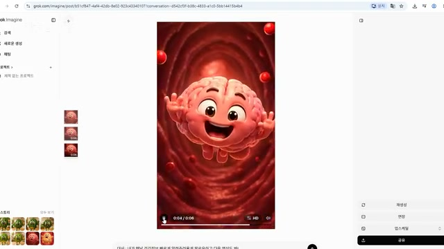
AI 인플루언서는 "그록(Grok)이랑 GPT 두 개로 만들어요." 인터뷰어가 "그록은 뭐예요?"라고 묻자 "영상으로 만들어 주는 AI예요. 또 다른 AI 풀 같은 거네요"라고 설명한다.
만들어 놓은 영상의 예시로 건강 정보를 알려주는 귀여운 캐릭터 AI가 "내가 맨날 건강 정보 빠르게 알려주러 올게. 팔로우하고 다음 영상도 화이팅"이라고 말하는 영상을 보여준다. "이 이미지를 GPT로 뽑았어요. 그리고 이 이미지에 대사 이렇게 해 달라고 하면 이렇게 영상이 바로 만들어져요."
인터뷰어가 강아지 캐릭터를 요청하자, 주인공은 GPT에 "닥스훈트로 할게요. 단 이렇게 세 줄만 하면은 알아서 만들어 줘요. 이미지를 만들고 영상화시키면 끝이에요"라고 시연한다. 실제로 이미지가 생성되고 다운로드한다.
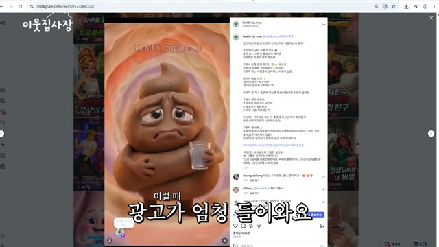
인터뷰어가 "날씨가 너무 덥다"는 대사를 요청하자, 주인공은 "대사랑 연출 이렇게 두 개만 할게요"라고 하며 그록에 입력한다. "그록은 무료로 쓸 수 있는 건가요?"라는 질문에 "네. 무료로도 사용 가능해요"라고 답한다.
생성된 영상은 강아지가 "요즘 너무 더워. 서울에서 부산까지 왔는데 너무 힘들어. 난 직업은 PD야"라고 말한다. 인터뷰어는 "제 마음을 대변해 주고 있는 거 같은데요"라고 웃는다. 강아지는 이어서 "나가는 안 돼. 오래 갇혀 있었더니 몸이 묻어서 꼼짝을 못 하겠어"라고 말한다.
주인공은 이 계정으로 "CJ에서 광고가 들어온 거예요. 이렇게 대기업에서도 광고가 엄청 들어와요. 저는 이 영상 한 개 올리고 100만 원 이상 받았어요. 광고비로"라고 밝힌다. "한 시간 만에 영상 만들고 그냥 올려 주기만 했는데 100만 원 이상 광고 단가를 받았어요." 또한 "셀트리온에서도 연락 오고" "아이브에서도 이렇게 연락이 왔고 광고대행사에서도 이렇게 연락이 엄청 와요"라고 말한다.
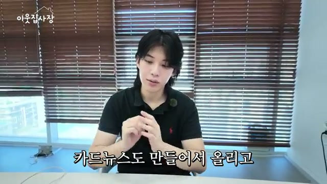
주인공은 이 계정을 "외주용으로 운영을 하고 있어요." 외주용의 의미에 대해 "대기업에서 광고 올려 달라고 연락을 주시면 저는 이렇게 돈 받고 영상 올려주고 그리고 인스타그램에 카드 뉴스도 만들어서 올리고 이중으로 수익을 지금 얻고 있어요"라고 설명한다.
"언론사에서도 연락이 와요. 위키틀리라는 언론사인데 같이 콘텐츠 만들고 싶다. 제휴 맺고 싶다. 연락이 와 가지고요"라고 추가 수익 경로를 공개한다. "한번 대기업에서 연락이 오면은 계속 꾸준히 광고를 줘요"라는 점도 강조한다.
수익 규모를 정리하면 "이미지 한 장 보너스는 한 달에 100만 원 정도 벌고 이거는 한 달에 많게는 500까지 벌어요." 하루 1~2시간이면 충분하다고 하고, 나머지 시간에는 "아까 말씀드렸듯이 해외 맨날 돌아다니요"라고 말한다. 인터뷰어가 "거의 인생이 부업이시네요"라고 하자 "네, 이렇게요"라고 답한다.
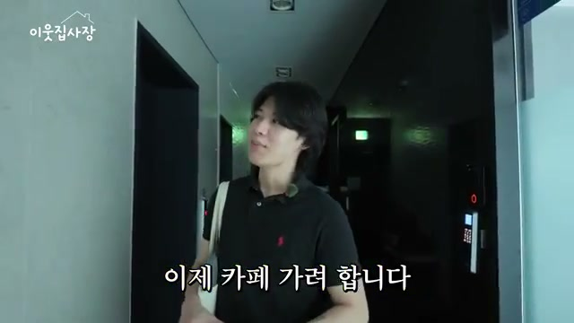
주인공은 "사무실에 박혀 가지고 집에 박혀 가지고 일만 하다 보니까 친구가 없어요"라고 고백한다. 외롭지 않냐는 질문에 "근데 조회수가 올라가고 입금이 되는 걸 느끼면 너무 기분이 좋아져요. 그걸로 희열을 느껴요"라고 답한다. 인터뷰어가 "오히려 친구보다 돈이 좋다"고 정리하자 "약간 적긴 한데. 네. 그렇습니다"라고 웃으며 인정한다.
이후 카페로 이동하는 장면에서, 원래 "집중 안 될 때는 카페 가서 일을 주로 한 편이에요"라고 말한다. 미리캔버스가 모바일로도 가능하냐는 질문에 "모바일 어플도 따로 있어요. 이렇게 미리캔버스라고 있거든요. 이렇게 됩니다"라고 답하며 모바일 앱의 유용성을 확인해준다. "폰으로도 이거 진짜로 가능해요."
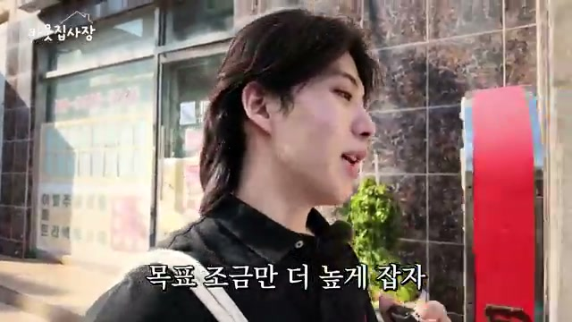
카페에서 주식 창을 보며 "아 오랜만에 주식 장고 보고 있는데 한숨만 나오네요. 요즘 말이 안 나와요"라고 말한다. 하지만 "그래도 5월에는 한 1억 정도 벌었어요"라고 밝힌다. 인터뷰어가 놀라자 "네. 지금은 좀 많이 물려 있어요. 저가 23살 때 국장을 해봤거든요. 그때 2억 날렸어요"라고 과거 손실도 솔직하게 공유한다.
투자를 병행하는 이유는 "뭔가 단순 사업으로 100억 가기는 너무 힘들 거 같은 거예요. 그래서 사업이랑 투자 계속 합쳐서 올라가는 중입니다"라고 설명한다. 100억을 목표로 하는 이유는 "멋지잖아요. 제가 24살쯤에 10억 근절이 한번 찍어 봤는데 10억 찍고 나니까 너무 공허해지는 거예요. 그래서 그냥 목표 조금만 더 높게 잡자. 거창한 의미는 두지 말고 목표를 높게 두자 해서 100억이 됐습니다"라고 말한다.
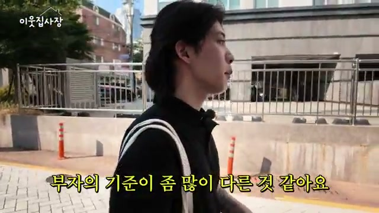
돈을 좋아하게 된 배경에 대해 주인공은 "저가 어릴 때 약간 힘들게 자랐던 거 같아요. 제가 할머니랑 같이 컸거든요"라고 털어놓는다. "물론 어릴 때 당시에는 정말 행복했어요. 정말 즐거웠고. 근데 그때는 다른 사람들도 다 저처럼 사는 줄 알았어요. 그게 평균인 줄 알았는데 20살 되고 보니까 사실 난 힘들게 자랐구나. 가난했구나 이걸 느꼈어요. 이게 가난한 사람은 스스로가 가난한지 모르더라고요. 저 또한 그랬고요. 근데 한번 천장을 뚫고 나니까 아 사실은 가난했구나. 이거를 느끼게 되었어요."
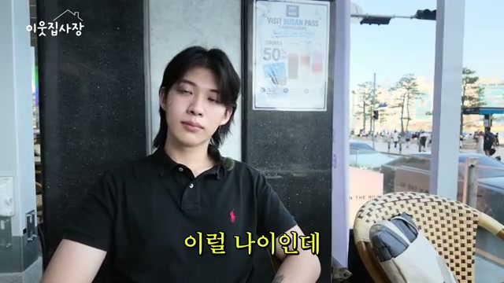
돈을 많이 벌면 만나는 사람들이 달라지는지 묻자, "일단 전 진짜 아무것도 아니게 돼요. 주변에 막 26살 27살 저랑 동갑이고 세 살 차이밖에 안 나는데 다들 100억 200억 그냥 우습게 찍고 그분 앞에 가면은 저는 아무것도 아니게 되는 거죠"라고 답한다.
"사람들이 생각하는 부자의 기준이 좀 많이 다른 거 같아요. 제가 인터뷰를 많이 하다 보니까 돈 잘 버시는 대표님들도 명품 있고 막 그럴 거 같았는데 막상 그런 분들이 많이 없더라고요." 자신에 대해서는 "실제로 내 장고(자산)가 많아야지 기분이 좋다. 전 이런 타입이에요"라며 "저도 한 때 좀 많이 사입어 봤었어요. 근데 의미가 없다는 걸 깨닫고 다 그냥 당근했습니다. 100억도 없는데 명품 입고 어깨 뽕 솟은 거마냥 우쭐댄다고"라고 말한다. "그 명품 입을 거면 100억 정도 벌어야 된다"는 조언으로 마무리한다.
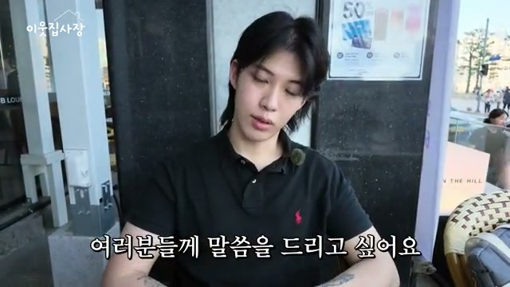
힘든 상황을 겪었을 때 감정 상태에 대한 질문에 주인공은 "거기서 무너져 내리면 그냥 그릇이 그거밖에 안 되는 거죠. 그거를 원동력 계속 삼아서 떠오르게 해야지 성장을 할 수 있다고 생각을 해요. 전 그러고 있고요"라고 답한다.
이어서 "제가 ADHD가 있는데 의사 선생님 말씀으로는 일상생활이 완전 불가능하다고 하실 정도라고 하더라고요"라고 고백한다. "그래서인지 저는 항상 쉬운 일만 찾아서 했던 거 같아요. 그래야지 계속 집중할 수 있고 그 일을 오랫동안 할 수 있으니까. 그래서 찾은 게 이번에 바로 인스타 보너스이고요. 그만큼 쉽다는 걸 여러분들께 말씀을 드리고 싶어요."
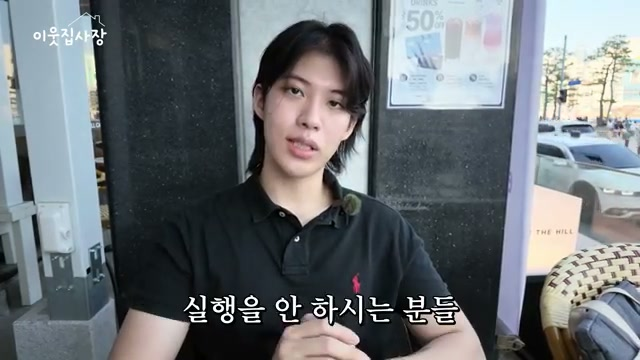
영상을 시청한 사람들에게 "일단은 뭐가 됐든 시도를 해라. 그리고 제가 알려 드린 것도 시도 한번만 해 봐라. 제가 이 영상 댓글에 고정 링크를 달아 놓을 거예요. 거기에서 무료 이런 거 다 받으시고 그것만 뭐 시도만 하더라도 일단 반은 간 거다. 전 이렇게 생각을 하거든요. 그래서 실행력이 가장 중요하다고 생각을 해요"라고 조언한다.
마지막 소감으로 "일단 주말인데도 불구하고 부산까지 이렇게 출장 와 주신 피디님께 너무 감사합니다"라고 인사하고, "매번 부업 영상 보시고 실행을 안 하시는 분들 꼭 한 번쯤은 해 보셨으면 좋겠다. 이 말씀을 꼭 드리고 싶어요"라고 당부한다. 인터뷰어는 "부산까지 와서 대표님 많은 인사이트 얻고 좋은 정보 얻어가서 저 또한 너무 감사합니다"라고 화답하며 영상이 마무리된다.
"지금 여태까지 부업으로 총수익은 한 17억 정도 되거든요."
"정말 개꿀인 부업들만 이렇게 골라서 일을 하다 보니까 좀 돈을 쉽게 쉽게 벌었던 경향이 있던 거 같아요."
"정답을 알고 싶으면은 시장을 봐라. 시장의 정답이 다 있다. 일단 뺏기고 시작해서 그다음 내 방식을 넣어."
"제일 중요한 게 전 세계에서 단 세 나라만 가능해요. 미국, 일본, 대한민국. 다른 나라는 절대 안 돼요."
"하루에 3~4시간 이상 써야 된다. 그건 부업이 아니에요. 부업은 말 그대로 본업 이해에 한 시간 이내 할 수 있는 업종을 부업이라 하는 거예요."
"담배도 펴본 사람만 알아요. 근데 제 사촌이랑 친구들은 담배를 안 펴봤어요. 그래서 맛을 모르죠. 이것도 안 해 봐서 모르는 거예요. 돈이 얼마나 쉽게 벌리고 많이 벌린다는 걸."
"평범하게 사는데 행복한 미래를 상상한다. 그거는 좀 잘못된 생각이라 생각해요."
"보통 학창 시절에 시험 점수 잘 나오면은 기분 좋잖아요. 저한테는 새로고침 한번 하고 수익이 높게 나왔을 때 그때가 기분이 제일 좋았어요."
"이게 가난한 사람은 스스로가 가난한지 모르더라고요. 저 또한 그랬고요. 근데 한번 천장을 뚫고 나니까 아 사실은 가난했구나."
"거기서 무너져 내리면 그냥 그릇이 그거밖에 안 되는 거죠. 그거를 원동력 계속 삼아서 떠오르게 해야지 성장을 할 수 있다고 생각을 해요."
"100억도 없는데 명품 입고 어깨 뽕 솟은 거마냥 우쭐댄다고."
"일단은 뭐가 됐든 시도를 해라. ... 그것만 뭐 시도만 하더라도 일단 반은 간 거다. ... 실행력이 가장 중요하다고 생각을 해요."
이 영상은 26살 청년이 15살부터 11년간 온라인 부업 시장의 흐름(페이스북 → 유튜브 → 블로그 → 인스타그램)을 읽고, 성공과 대실패를 반복하며 결국 '인스타그램 보너스'라는 새로운 수익원을 발굴한 과정을 담고 있다.
핵심 메시지는 크게 세 가지다. 첫째, 시장의 흐름을 읽는 능력이다. 주인공은 국내 정보에만 머물지 않고 해외 레딧을 매일 탐색하며 미국에서 먼저 출시된 인스타그램 보너스가 한국에 들어오는 타이밍을 포착했다. 둘째, 쉬운 일을 선택하는 전략이다. 그는 ADHD 진단을 받을 정도로 집중이 어려운 상황에서, 오히려 "쉬운 일만 찾아서" 성과를 냈다. 복잡한 영상 편집이나 트렌드 추적이 필요한 유튜브·블로그 대신, 40초 만에 이미지를 만들고 뉴스 헤드라인을 활용하는 단순한 시스템을 구축했다. 셋째, 실행력의 중요성이다. 주변에 아무리 방법을 알려줘도 실행하지 않는 사람들이 많다는 점을 담배 비유로 설명하며, 어떤 정보든 시도하지 않으면 의미가 없다고 강조한다.
실용적 시사점으로는, '100만 조회수'라는 벽이 부담스러울 수 있지만 뉴스 1위 헤드라인 + 관련 이미지 + GPT 생성 멘트라는 간단한 공식으로 이미지 한 장이 100만 조회수를 달성할 수 있다는 점, 저작권 걱정은 텍스트를 입힌 2차 창작으로 해결된다는 점, 계정 다각화(10~15개)와 리스크 분산(폰 10대) 전략, AI 인플루언서로 대기업 광고(100만 원 이상 단가)를 유치하는 확장 경로까지 제시된다.
향후 전망 면에서는, 인스타그램 보너스가 아직 한국에서 초기 단계라 "아는 사람이 없고 하는 사람도 없다"는 선점 효과가 크다. 다만 정책 위반으로 계정이 삭제될 수 있는 리스크가 존재하고, 언제든 플랫폼 정책이 바뀔 수 있다는 점에서 주인공 자신도 유튜브 숙청의 교훈을 잊지 않고 다계정 분산 전략을 유지하고 있다. 또한 단순 사업만으로는 100억 자산가에 도달하기 어렵다고 판단해 사업+투자를 병행하며 100억을 향해 나아가고 있다는 점에서, 부업을 넘어 자산을 축적하는 장기 전략의 관점까지 보여준다.
영상은 전체적으로 '누구나 따라 할 수 있는 쉬운 부업'이라는 프레임을 내세우지만, 그 이면에는 시장 조사, 시스템화, 리스크 관리, 빠른 실행이라는 주인공의 11년간의 노하우가 축적되어 있다는 점을 간과해서는 안 된다.
댓글
GitHub 이슈 기반 댓글 시스템입니다.